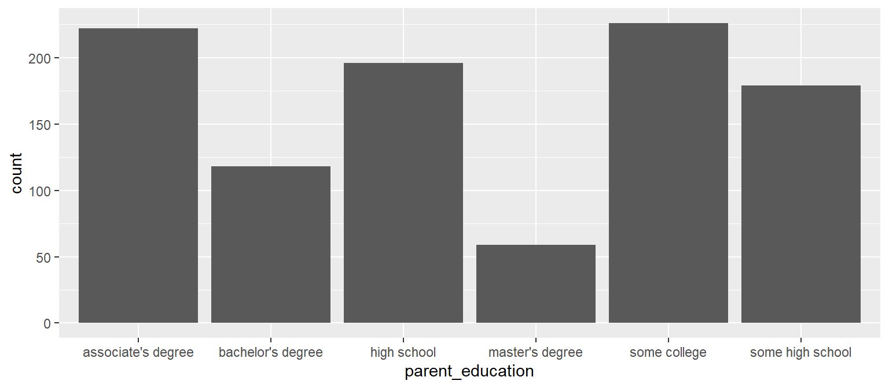
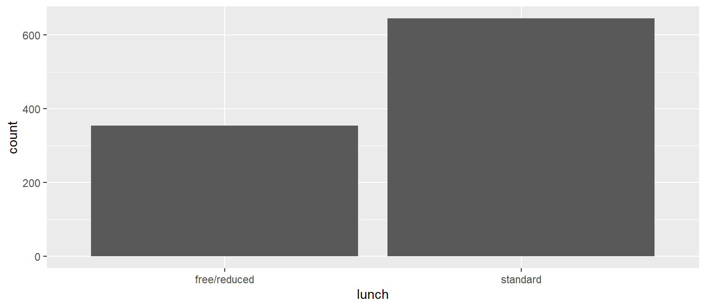

Histogram: Counting the Number of Numeric Occurances
X: Numeric, Y: N/A
Bar Plot: Counting the Number of Categorical Occurances
X: Categorical, Y: Auto Counts Categories

Boxplot
X: Categorical, Y: Numeric

Scatterplot
X: Numeric, Y: Numeric
Code

Practice Exercises
Use the copy button in the top left corner of the code box below to get the data needed for the practice exercies. The code below may look weird depending on the size of your screen, but regardless use the copy button then paste it into your rscript.
This is our dataset for this practice:
| gender | race/ethnicity | lunch | test preparation course | math score | reading score | writing score | parent_education |
|---|---|---|---|---|---|---|---|
| female | group B | standard | none | 72 | 72 | 74 | bachelor’s degree |
| female | group C | standard | completed | 69 | 90 | 88 | some college |
| female | group B | standard | none | 90 | 95 | 93 | master’s degree |
| male | group A | free/reduced | none | 47 | 57 | 44 | associate’s degree |
Back-Ticks and Single Quotation Marks
When columns have spaces in the column name (like test perparation course, math score, reading score, and writing score), you must wrap the column in `back-ticks` and not ‘single quotation marks’ to use them in R.
Examples:
- `
test perparation course` - `
math score`
Notice how race/ethnicity is connected with a parenthese \ and parent_eduction is connected with an underscore _ . Neither need the back-ticks around it.
Remember this in the following exercises
Exercise 1: Visualizing a Distribution using a Histogram
Prompt: Show the distribution of math scores
Instructions:
- use the dataset from above called
bob - use the `
math score` column and make sure it is wrapped in tick marks. This is necessary when column names contain spaces. - use
geom_histogram()on line 2
Starter Code:
Answer:
Exercise 2: Visualizing Counts of School Degrees
Prompt: Make a bar chart visualizing the count of school degrees
Instructions:
- use the dataset from above called
bob - use
parent_educationcolumn as the x axis - use
geom_bar()in line 2
Starter Code:

Answer:
Exercise 3: Scatter Plot to Visualize Test Scores
Prompt: Make a scatter plot visualizing the correlation of reading scores and writing scores
Instructions:
- use the dataset from above called
bob - use the `
reading score` column as the x axis - use the `
writing score` column as the y axis - use the
gendercolumn as the color - use
geom_point()in line 2
Starter Code:
Answer:
Exercise 4: Visualizing Distribution using Boxplots
Prompt: Make a scatter plot visualizing the correlation of reading scores and writing scores
Instructions:
- use the dataset from above called
bob - use the
lunchcolumn as the x axis - use the `
math score` column as the y axis - use
geom_histogram()in line 2
Starter Code:
Notice in the starter code we didn’t specify data, x, and y. ggplot doesn’t require explicitly specifying the arguments for data, x-axis, and y-axis. Those are implied by their position in the code below. This way of writing code require less typing and is very common.
Answer:
For the remainder of the exercises, no starter code is provided. Look back at previous exercises for help if needed.
Exercise 5: Bar Chart
Prompt: Make a bar chart visualizing the types of lunches
Instructions:
- Remake the plot below

Answer:
Exercise 6: Scatter Plot
Prompt: Using the iris dataset (which is built into R and ready to use) make the scatter plot below. Look at the x-axis, y-axis, and legend for the columns to use.
Instructions:
- Remake the plot below
Answer:
Exercise 7: Boxplot
Prompt: Using the iris dataset (which is built into R and ready to use) make the boxplot below. Look at the x-axis, y-axis, and legend for the columns to use.
Instructions:
- Remake the plot below

Answer:
Exercise 8:
Prompt: Using the iris dataset (which is built into R and ready to use) make the histogram below. Look at the x-axis, y-axis, and legend for the columns to use.
Instructions:
- Remake the plot below
Answer: